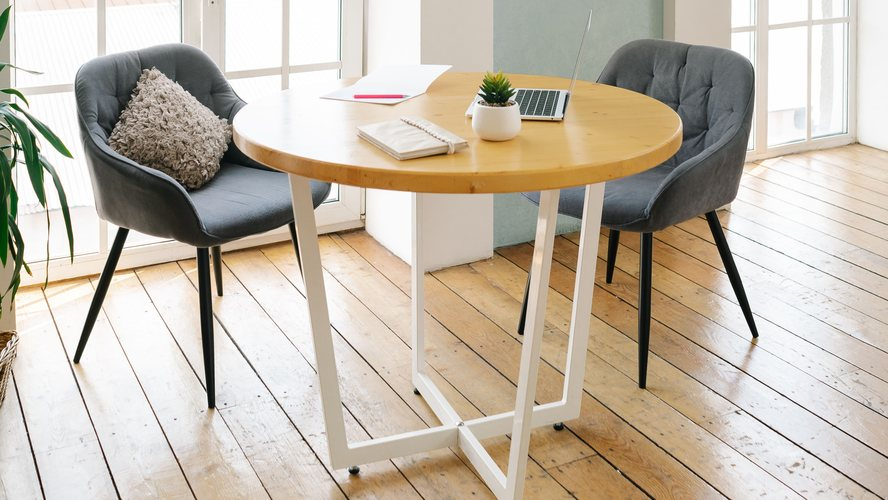
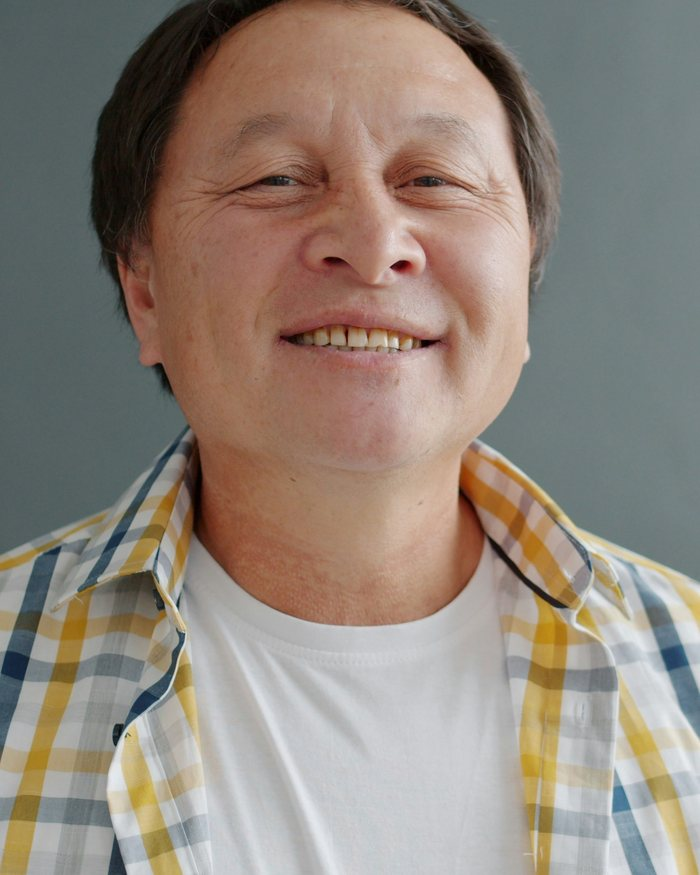

柏の独立系FP 白岩FP事務所90歳までの収支を見える化
- 相談実績1,900件超
- 初回60分11,000円
- J-FLEC認定アドバイザー
※相談実績は、2013年の開業からの延べ件数です（2026年8月末時点）。
柏駅東口から徒歩6分の独立系FP事務所。現在の家計状況から90歳までの収支・資産残高を詳細に試算します。初回相談は60分11,000円で、30分以内に終了した場合は相談料をいただきません。
ご相談内容
当事務所では、次のようなお金のご相談を承っております。
家計
- 家計の立て直しをしたいが、どこを改善すべきか分からない
- いまの収入で今後も生活していけるのか分からない
家計収支とご家族のご希望をもとに問題点を洗い出し、改善策をキャッシュフロー表にまとめます。
住宅
- マイホームを購入したいが、本当に買っていいのか不安
- 住宅ローンの借入額の決め方を知りたい
持ち家の支出と賃貸の支出を比較し、住宅ローンの借入額を試算します。修繕費・固定資産税も考慮に入れます。
教育資金
- 子どもを大学まで進学させたいので、どれくらいお金がかかるか知りたい
- 学資保険を勧められたが、本当に必要か中立的な意見を聞きたい
お子様の進学時期や進路に合わせて、将来必要な教育資金を試算します。
老後資金
- 老後に向けて、いくら貯蓄すればよいか知りたい
- 退職金をどう使えばよいか分からない
年金の受給見込み額をもとに退職後の収支を試算し、必要な貯蓄額と退職金の使い方を検討します。
保険
- いま入っている保険の内容が分からない
- どんな保障がどれくらい必要か知りたい
必要保障額を試算します。ご加入中の保険があれば、一緒に内容を確認いたします。
資産運用
- 資産運用に興味はあるが、何から始めたらいいか分からない
- NISAやiDeCoの仕組みがよく分からない
ご家族の状況を伺いながら、資産運用の考え方を整理します。個別の銘柄の推奨は一切いたしません。
4つの特徴
中立・独立の立場からのアドバイス

保険や投資信託の販売は一切ありません。当事務所は商品販売による手数料を受け取りません。
90歳までのキャッシュフロー表
住宅・教育・老後の支出を含め、90歳になるまでの収支や資産残高の推移を試算いたします。いまのままの表と見直し後の表を並べてお渡ししますので、どこがどれだけ変わるかが分かります。
J-FLECの認定アドバイザー
代表は金融経済教育推進機構（J-FLEC）の認定アドバイザーです。認定の状況は、J-FLECの認定アドバイザー検索でご確認いただけます。
来所・オンラインの両方で相談対応
来所のご相談のほか、オンライン相談にも対応しております。平日の日中にお時間の取れない方は、土曜9:00〜12:00にもご相談いただけます。
キャッシュフロー表の見本
いまのままだと65歳を境に資産が減り続け、90歳の時点で
240万円が不足する見通しです。
見直し後は、90歳の時点で
860万円が残る見通しです。
| 年齢 | いまのまま | 見直し後 |
|---|---|---|
| 35歳 | 889 | 889 |
| 50歳 | 1,120 | 1,390 |
| 65歳 | 1,480 | 2,180 |
| 80歳 | 620 | 1,520 |
| 90歳 | −240 | 860 |
（キャッシュフロー表より抜粋）
料金
初回相談
60分11,000円（税込）
最初の30分で、相談をこのまま続けるかどうかをご判断ください。30分以内に終了した場合は、来所でもオンラインでも相談料をいただきません。30分を超えた場合は60分11,000円の相談料をお願いしています。
ご来所の場合は、当日に現金またはクレジットカードで料金をお支払いください。オンライン相談の場合は、日時決定後に前払いでお振込みをいただいております。日程の変更とキャンセルは前日までにお知らせください。当日のキャンセル料は5,500円です。
J-FLECの割引クーポン
「J-FLECはじめてのマネープラン」割引クーポンは、J-FLEC認定アドバイザーの有料相談を初めて利用する個人の方を対象に、相談料の最大8割を割り引くものです。
- 割引の上限は1時間あたり8,000円、3時間合計で24,000円
- クーポンのご利用はおひとり様1回（合計3時間）限り
- 有効期間は発行から6か月間
- 配布は3,000名分の予定（申請が上限に達した場合は、J-FLECが一時的に受け付けを中断することがあります）
クーポンご利用の方は当事務所までご連絡ください。クーポンを使ったご相談をお受けできるかどうか、お返事いたします。そのあと、お客様ご自身でJ-FLECの案内ページよりお申し込みください。ご相談の日時はクーポンの付与が完了してから決定します。付与までに1〜2週間程度の期間を要する場合があります。
初回相談11,000円−割引8,000円＝ご負担3,000円
（11,000円×80%＝8,800円が上限の8,000円を超えるため、割引は8,000円です）
| 継続相談 | 60分11,000円／90分16,500円初回相談のあとのご相談です。オンラインでもご相談いただけます。 |
|---|---|
| キャッシュフロー表の作成 | 33,000円初回相談から1か月以内にお申し込みの場合は、この料金から初回相談でお支払いいただいた額を差し引きます。 |
| 住宅購入の検討 | 55,000円住宅ローンの借入額と購入後の家計を試算し、グラフと試算表にまとめてお渡しします。 |
| 顧問契約 | 月額13,200円月1回の面談で、キャッシュフロー表を最新の数字に更新します。表の再作成をご希望の場合は別途料金となります。面談以外のご相談は随時メールにてお受けしています。契約期間の縛りはありません。解約のお申し出をいただいた月の翌月から、料金は発生しません。 |
表示はすべて税込です。キャッシュフロー表の作成と住宅購入の検討の料金には、面談2回（各60分）と資料作成費が含まれています。1回目の面談からお渡しまで、2週間ほどお時間をいただきます。家計・教育資金・老後資金のご相談は「キャッシュフロー表の作成」、住宅のご相談は「住宅購入の検討」、保険・資産運用のご相談は「初回相談・継続相談」で承ります。
ご相談の流れ
Step1ご予約
まずはお電話またはフォームからご連絡ください。来所かオンラインのどちらかをお選びいただけます。割引クーポンのお申し込みの手順は、料金の欄の「J-FLECの割引クーポン」でご案内しています。
Step2ヒアリング
初回相談でいまのお困りごとやご家族の状況を確認いたします。キャッシュフロー表の作成は、初回相談のあとにお申し込みいただけます。
Step3現状分析
表の作成をお申し込みいただいたあとの1回目の面談で、お手元の書類をもとに、収入と支出、預金、ローン、保険の状況を分析します。
Step4プランのご提案
2回目の面談で、いまのままの表と見直し後の表をお渡しし、改善策をご提案します。
Step5手続きのご案内
改善策をお決めいただいたら、2回目の面談の中で、実行の手順と必要な書類をご案内します。
Step6アフターフォロー
顧問契約では、月1回の面談でキャッシュフロー表を最新の数字に更新いたします。顧問契約のない方の表も、暮らしが大きく変わったときは、別途料金で再作成いたします。
キャッシュフロー表のお渡しまでの回数は、初回相談1回と面談2回の計3回で、期間は1か月ほどです。初回相談から1か月以内に表の作成をお申し込みの場合、料金は合計33,000円です。
代表あいさつ

会計事務所からの独立
会計事務所で10年間、個人事業主の記帳と家計相談を担当したのち、2013年に白岩FP事務所を開業しました。いまは家計から資産運用まで、幅広いご相談を承っております。
会計事務所では、事業の数字を年ごとに並べてお見せすると、お客様が設備の買い替えや借入れの時期を決めやすくなることがよくありました。その経験を生かして、いまはキャッシュフロー表をつくっています。
代表白岩 誠一CFP®認定者（FPの国際資格）・1級ファイナンシャル・プランニング技能士（国家資格）・J-FLEC認定アドバイザー
お客様の声
掲載のご了承をいただいたお客様の声です。個人の感想である点にご留意ください。
よくある質問
保険や投資の勧誘はありますか？
当事務所では金融商品の販売や勧誘はしていません。
相談内容が他人に知られることはありませんか？
ファイナンシャル・プランナーには、職業上の倫理規定と守秘義務があります。業務上伺ったことを外部に漏らすことはありません。書類は鍵付きの書庫で保管します。
相談時間は決まっていますか？
初回相談は60分です。継続相談は、90分でもお受けしています。
当日の持ち物は何ですか？
源泉徴収票・確定申告書・通帳・保険証券・住宅ローン返済予定表・ねんきん定期便をご用意ください。お手元にあるものだけお持ちいただければ大丈夫です。オンライン相談の場合は、書類の写真を前日までにメールでお送りください。送付先メールアドレスはお申し込み後にお知らせいたします。
夫婦で相談できますか？
ご夫婦でのご相談も承っております。料金は相談時間に応じて頂戴しておりますので、おひとりでもおふたりでも変わりません。
家計簿がなくても相談できますか？
家計簿がなくてもご相談は可能です。源泉徴収票と通帳があれば、おおまかなお金の出入りはつかめます。ご相談では、日々の支出を一緒に整理いたします。
キャッシュフロー表作成後のフォローはありますか？
キャッシュフロー表をお渡ししてから1〜3か月あとに、実行の状況を伺う継続相談をおすすめしています。その後は、表を毎月更新する顧問契約のほか、暮らしが大きく変わったときの表の再作成もお選びいただけます。
お知らせ
営業日に土曜日を追加いたしました。土曜9:00〜12:00受付。
受付時間を変更いたしました。平日9:00〜18:00受付。
アクセス
柏駅周辺の地図
- 所在地
- 千葉県柏市柏0-0-0 ○○ビル3階（架空の住所です）
- 最寄り駅
- 柏駅東口から徒歩6分
- 定休日
- 日曜・祝日
- 駐車場
- 事務所付近のコインパーキングをご利用ください。
ご相談の予約
事業者情報・個人情報の取り扱い
- 事業者名
- 白岩FP事務所（架空の事務所です）
- 代表
- 白岩 誠一（CFP®認定者・1級ファイナンシャル・プランニング技能士・J-FLEC認定アドバイザー）
- 所在地
- 千葉県柏市柏0-0-0 ○○ビル3階（架空の住所です）
- 電話
- 04-0000-0000
- 業務の範囲
- 家計・住宅・教育・老後・保険・資産運用の相談と、キャッシュフロー表の作成。金融商品の販売・仲介および投資助言は行いません。
- 個人情報
- フォームにご入力いただいたお名前・ご連絡先と、ご相談でお預かりした家計の情報は、ご予約へのご返信、ご相談へのお答え、資料の作成にだけ使います。法令に定める場合を除き、ご本人の同意を得ることなく第三者に提供することはいたしません。これらの情報の開示・訂正・削除をご希望の場合は、お電話でお申し出ください。